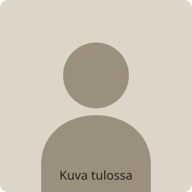

Olen Etunimi Sukunimi, ja autan ikäihmisiä digilaitteiden ja sähköisen asioinnin kanssa alueella [Kaupunki].
Moni on huomannut saman: pankki, Kela ja jopa oma terveysasema hoituvat nykyään netissä, mutta kukaan ei ehdi opastaa. Omat lapset asuvat kaukana tai vaihtavat asetukset nopeasti puolestasi – ja ensi viikolla olet taas yksin saman pulman kanssa.
Minä teen toisin. Istun viereesi, etenemme sinun tahdissasi ja kokeilet itse, niin että opit – sama asia kerrataan niin monta kertaa kuin tarvitaan. Autan sinua kuin auttaisin omia vanhempiani.
Taustallani on kuusi vuotta työtä asiakkaiden kanssa, joten osaan selittää asiat ilman tietokonekieltä. Tärkeintä ei ole tekniikka vaan se, että sinulla on rauhallinen ja turvallinen olo.
Lupaukseni sinulle
-
Sama tuttu auttaja
Ei vaihtuvia asentajia eikä puhelinjonoja – aina minä.
-
En myy ylimääräistä
En liittymiä, en laitteita, en lisäpalveluja, joita et tarvitse.
-
En kysy pankkitunnuksia
Tunnukset ja salasanat pysyvät aina vain sinulla.
-
Selkokielellä
Kerron hinnan etukäteen, ja jos en pysty auttamaan, käynti ei maksa mitään.